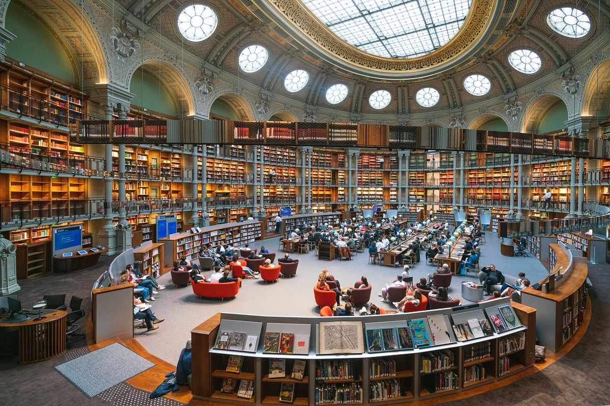

Timeline
Richelieu site-- the historic birthplace of BnF
Built
1721
The Palais Mazarin has been home to the Royal Library,
which moved to rue de Richelieu.
Construction commissioned by Cardinal Mazarin
.jpg)
a French prelate and politician first in the service of the Papacy , then Louis XIII and Louis XIV
renamed to Palais Royal after Mazarin's death
designated as the site for BnF after the French Revolution
5 May 1789 – 9 November, 1799
Proclamation of the French First Republic in September 1792
Reign of Terror and Execution of Louis XVI
established by King Charles V in 1368
Reign: 8 April 1364 – 16 September 1380
first opened to the public in 1692
Expansion
1860s
Architect Henri Labrouste leads an expansion of the Richelieu site,
adding new reading rooms and storage areas.
architect of the Bibliothèque Sainte-Geneviève

an inter-university and public library
Salle Labrouste（The Labrouste room）, inspired by Byzantine domes
.png)
.png)
the crinoline： a stiff designed to hold out a skirt,
popular at various times since the mid-19th century
Further Construction
1900s
From 1878, another architect Jean Louis Pascal built
the Manuscripts reading room and designed the Salle Ovale (The Oval Room).
Is currently accessible to anyone with a research access pass
Offers:
access to online database
department acquisitions
document photography
The construction was undertaken in 1897 by Pascal, and completed
in 1932 by Alfred Recoura.
A large reading room open to all. It owns 20,000 volumes and 9,000 comics with free access.

During World War II, the library suffered damage,
and was reconstructed after war.
François-Mitterrand site
1996
Since the collections continued to grow, a brand new site was built.
It is designed by Dominique Perrault, considered as a both classic and
minimalism.
the heir of modernism, appeared in the early 1960s in the US; "less is more"
Public library: offering workshops, training courses, and numerous online resources
Research library: offering access from 49 million documents by request